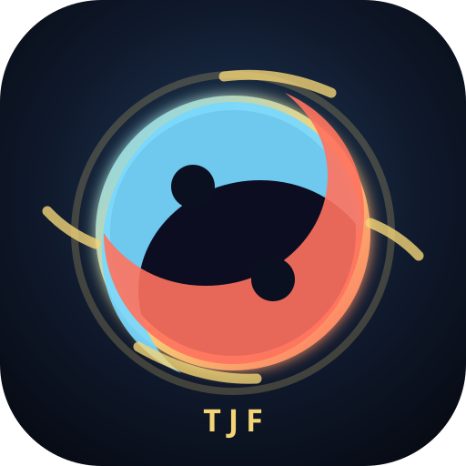

O fluxo foi interrompido
Esta versão ainda não está disponível no cache deste dispositivo. Reconecte-se à internet e carregue o jogo uma vez para habilitar o modo offline.
Tentar novamente Tehkné Solutions
Esta versão ainda não está disponível no cache deste dispositivo. Reconecte-se à internet e carregue o jogo uma vez para habilitar o modo offline.
Tentar novamente Tehkné Solutions